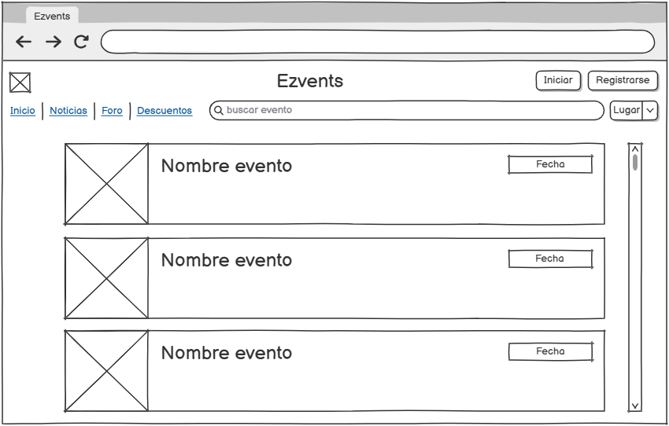
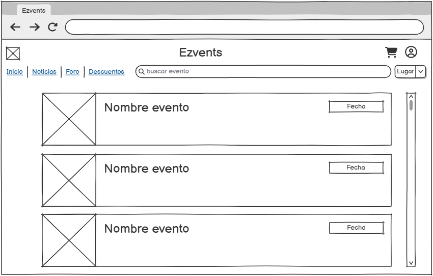
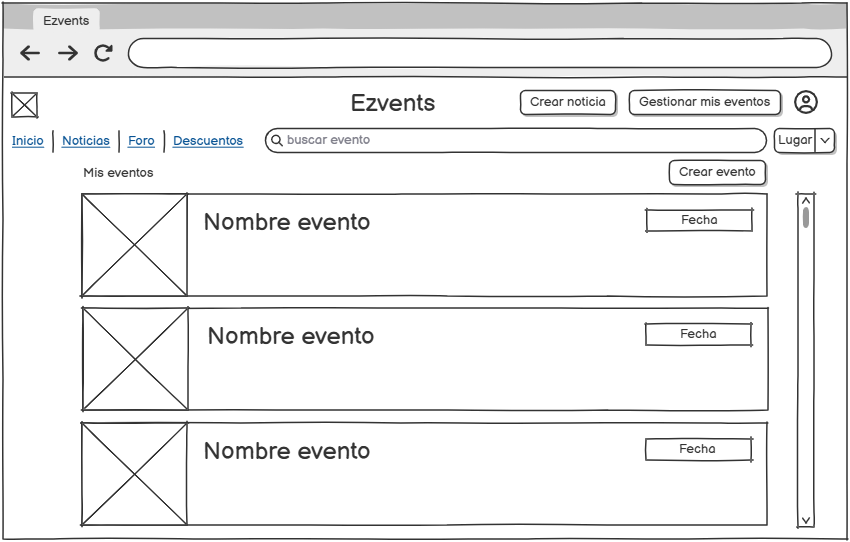
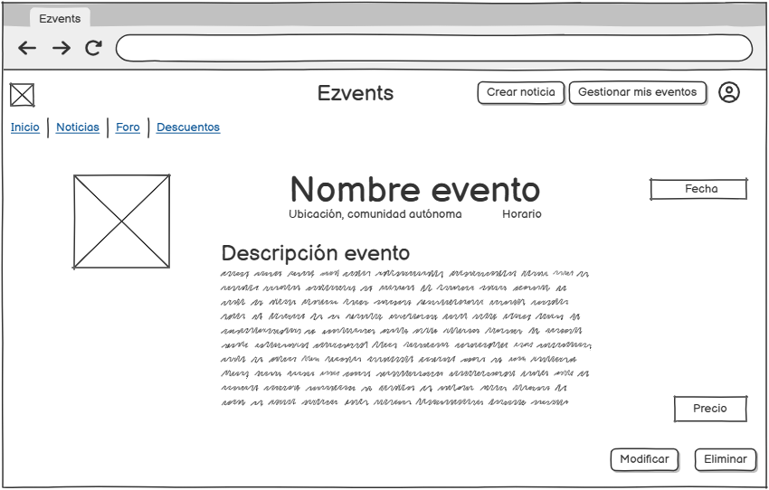
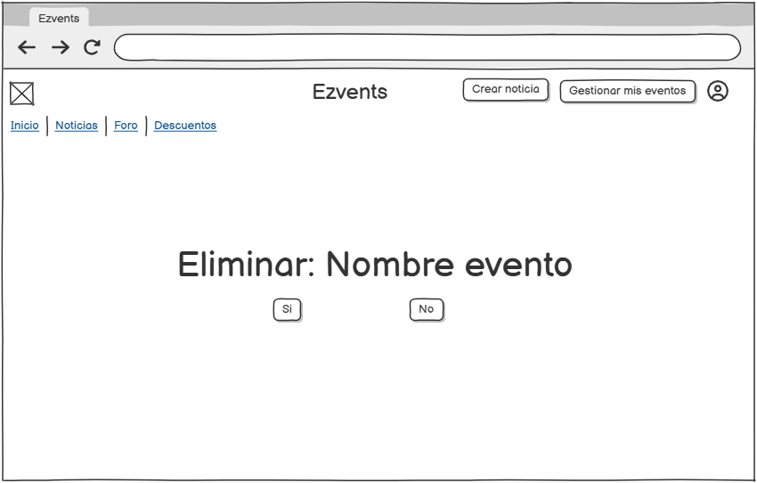
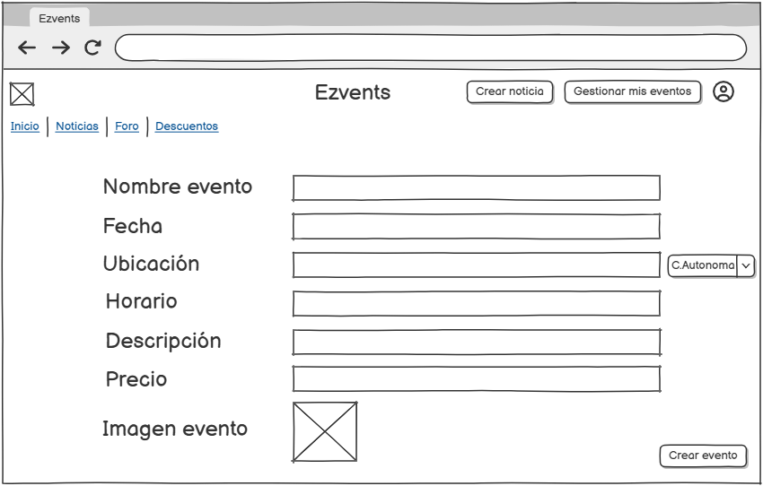

En la pantalla de inicio se podrán ver todos los eventos, se puede buscar uno en concreto o filtrar por ubicación.
Los eventos los puede ver cualquier persona, así es como se vería dependiendo del usuario:
Usuario sin registrar
Usuario registrado
Organizador o administrador

Se podrá seleccionar un evento en concreto para ver su descripción y, si el usuario lo desea, comprarlo.
Un evento en concreto se ve así:

Los organizadores tienen una opción de gestionar sus eventos, pueden acceder a ella a través del botón de Gestionar mis eventos. Desde aquí podrán ver sus eventos publicados, modificarlos o eliminarlos y crear eventos nuevos.
Gestion de eventos
Se puede seleccionar un evento en concreto y decidir si lo quieres modificar, eliminar o simplemente verlo.
Ver evento con opción de modificar o eliminar
Al darle a modificar evento saldrá la siguiente pantalla en la cual el organizador podrá cambiar los datos que quiera y guardar los cambios.

Al darle a eliminar saldrá una pantalla de confirmación.
Para crear un evento el organizador tendrá que darle a la opción de Crear evento la cual está en la pantalla de Gestionar mis eventos.
